Events & Talks
Tsukuba Conference - Japan 2019
How do Japan prepares for the next 20 years? Tsukuba City has 150 research centers and more than 20,000 scientists working in the latest technological innovation.
 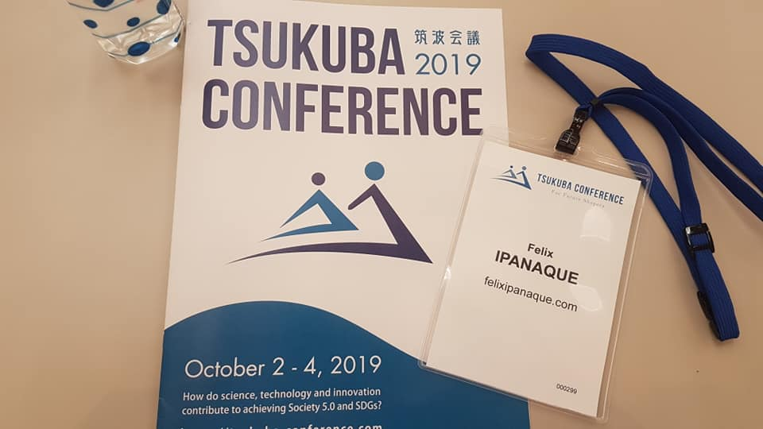
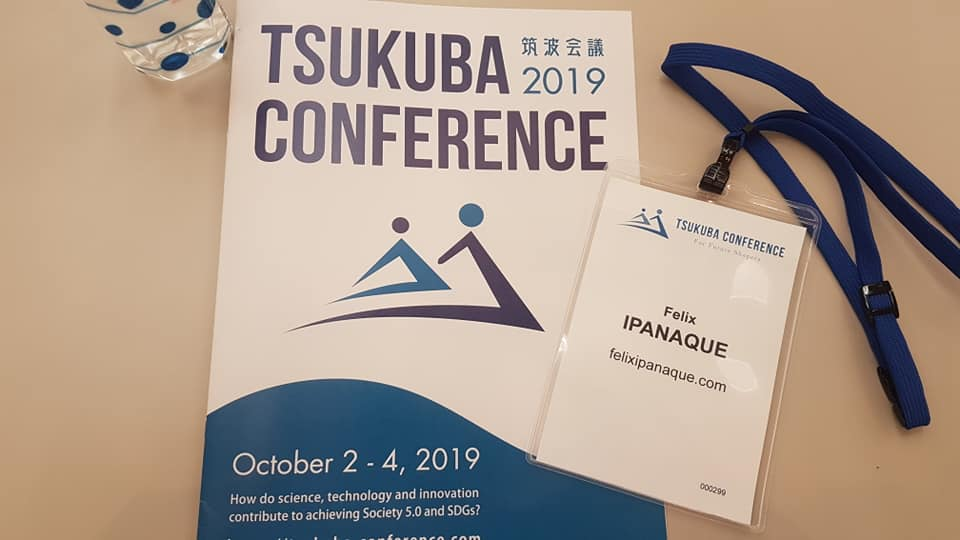
Appropiate Technology - Japan 2019
Presentation on “How to kick-off your ideas?”
Appropiate Technology is conducted at The University of Tsukuba (Japan) under the School of Integrative and Global Majors.

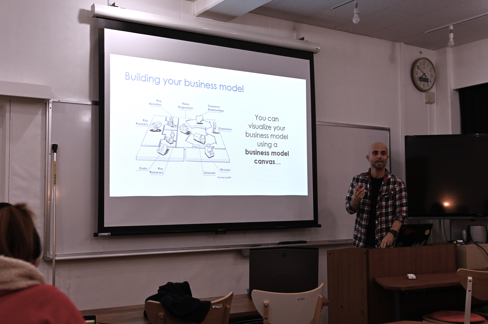
Appropiate Technology Demo Day - Japan 2018
Advisor, speaker and judge for the Demo Day of Appropiate Technology course. This course aims to give its students a holistic experience for developing a simple and low-cost technology for their target community. Appropiate Technology is conducted at The University of Tsukuba (Japan) under the School of Integrative and Global Majors.
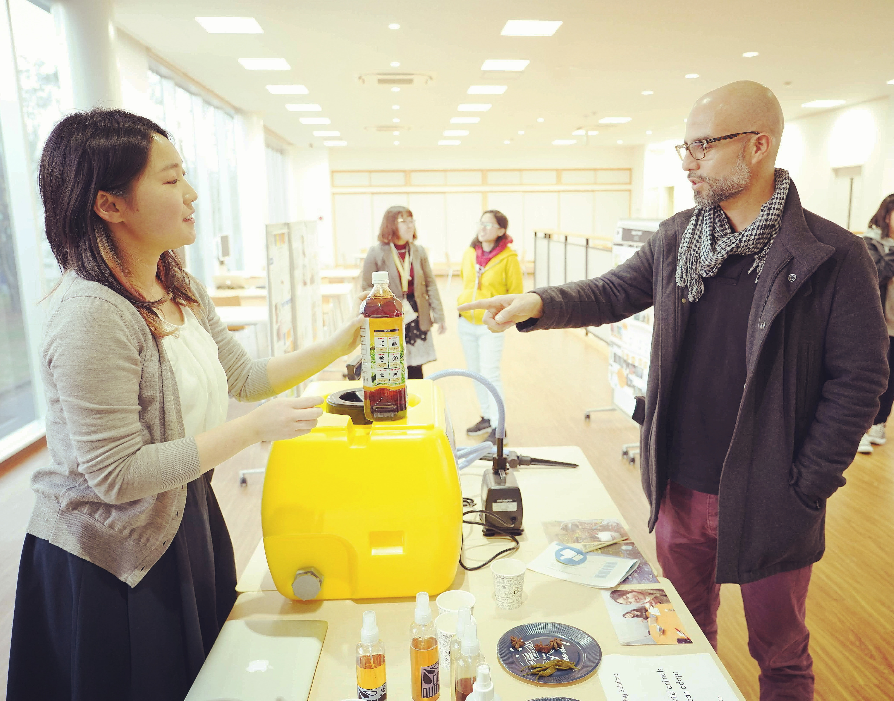
Asia-Pacific Economic Cooperation (APEC) Forum. Port Moresby - 2018
I was invited to give a talk on the risks and opportunities of using big data in a digital economy.
APEC is a regional economic forum to promote foreign trade across Asia-Pacific country members.
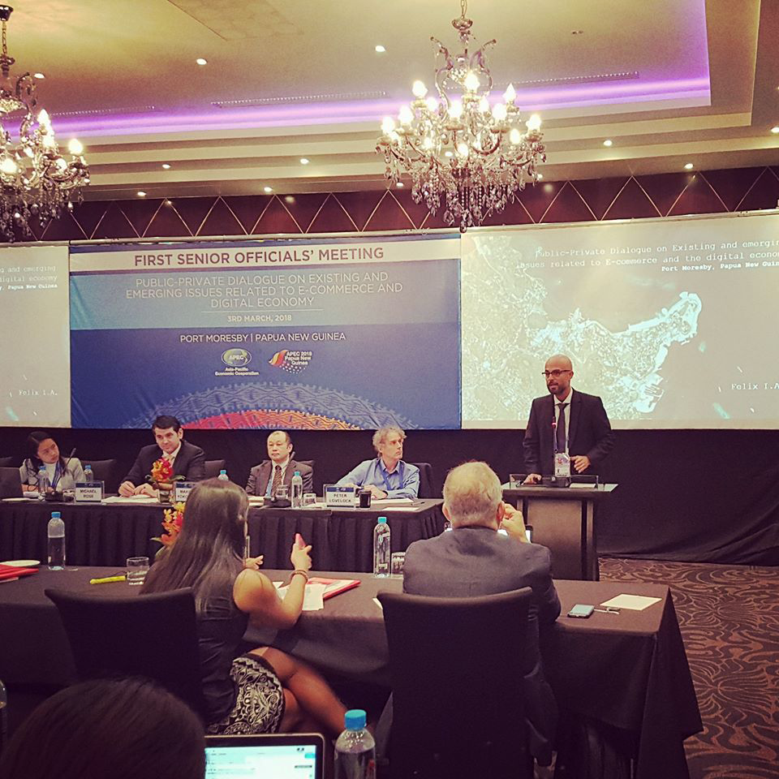
StartUp Peru Summit 2017
I was invited to share my experiences on the Merge & Acquisition of PickApp by Scharff Inc.PickApp by Scharff Inc.
SUP Summit is the largest annual meeting of the peruvian startup ecosystem. It takes place in December 2017 and aims to foster collaborative work and open innovation among different stakeholders of the peruvian entrepreneurial ecosystem.
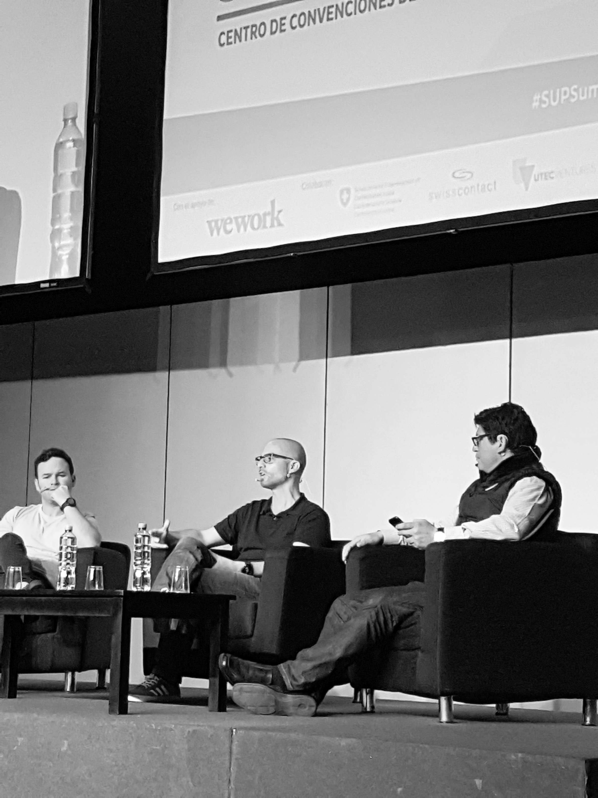 
Eckardt, D., Helion, C., Schmidt, H., Chen, J., & Murty, V.P. (under review). Storytelling changes the structure and perceived value of event memories. Under review at Cognition, May 31, 2023.
Intercon 2016
The International Conference on Electronics, Electrical Engineering and Computing – INTERCON aims to bring together researchers, professionals, students and entrepreneurs to facilitate the approach, identification and commitment to join challenges that allow the development of technologies for the benefit of humanity. This event is organized by the IEEE Peru Section.
I was invited as a speaker to talk about my experience as a founder of PickApp, one of the very first startups in Peru.
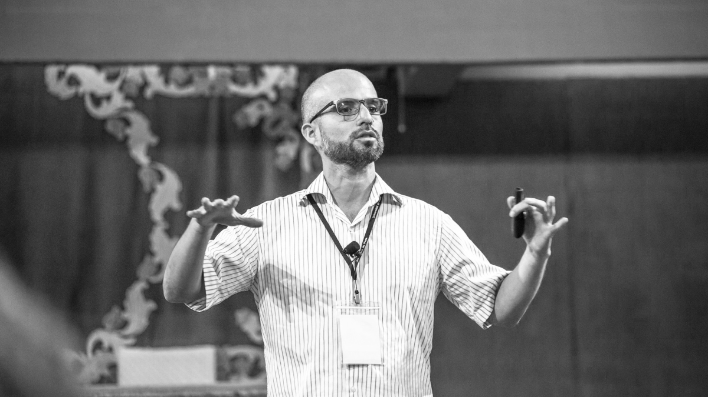
NED 2016
Panelist in Section on Technology Innovation presented by Suneet Singh Tuli.
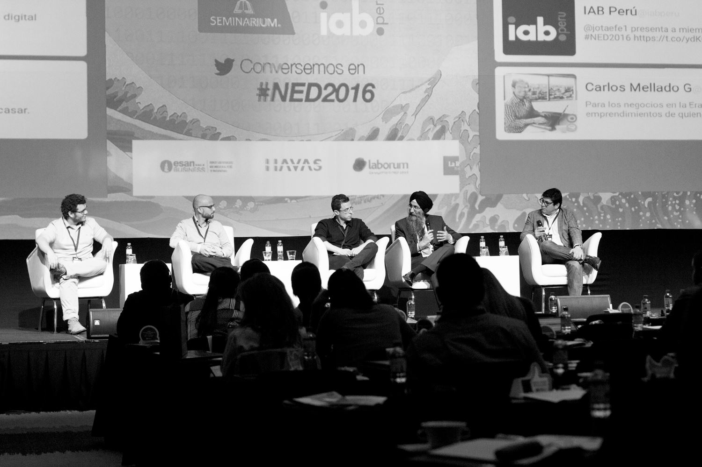
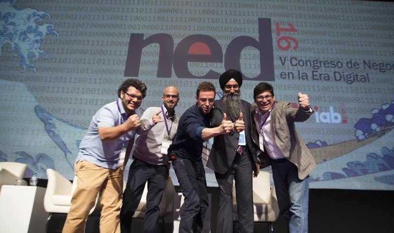
Interview for Correo - Peru 2015
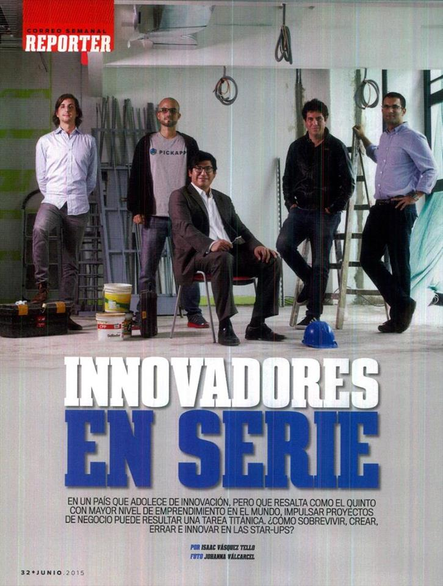
Pacific Alliance - Mexico 2015
The Pacific Alliance is an initiative of regional integration across Chile, Colombia, Mexico and Peru. The trip was an initiative of the Peruvian startup community to find investors in Mexico.

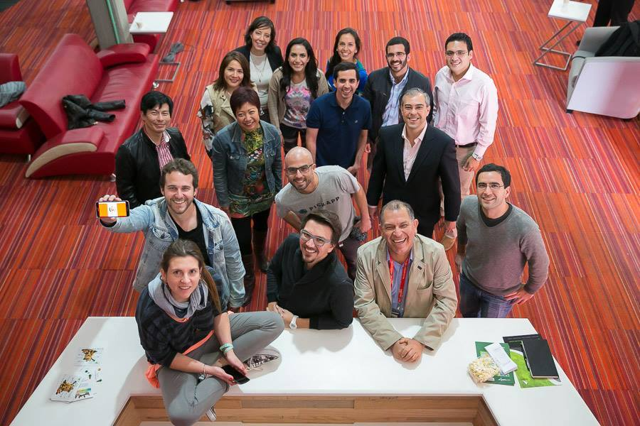
StartUp Peru - 2015
Seed capital given by the Peruvian Government to startups with competitive advantages.